IDS/IPS and Wazuh implementation at the end.
Project description:
I am going to create an Ubuntu machine with a GUI, even though I will primarily use the terminal. Additionally, I will set up IDS/IPS monitoring.
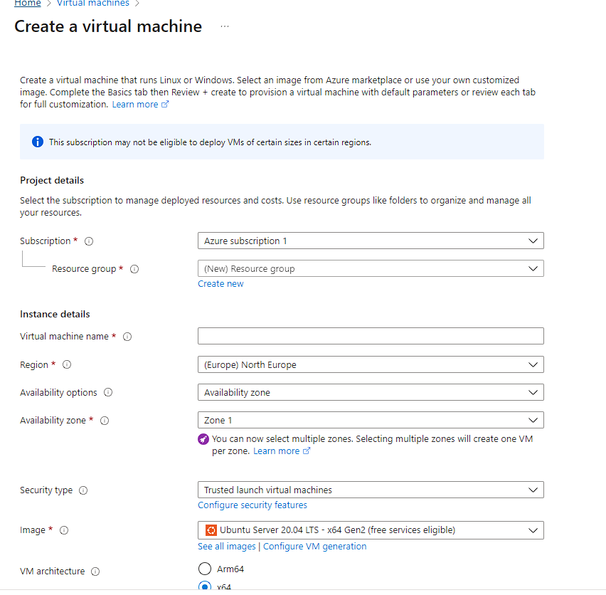
After completing the initial setup, I downloaded the private key and deployed the VM. Once it was deployed, I clicked on "Go to Resource".
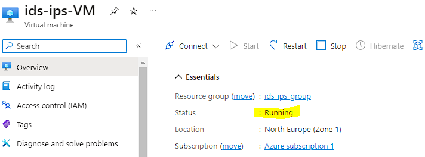
As you can see in the picture above, the status is running.
After that, I clicked on "Connect."
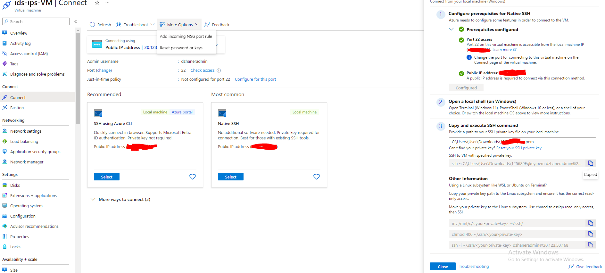
I have successfully connected to my Ubuntu VM.
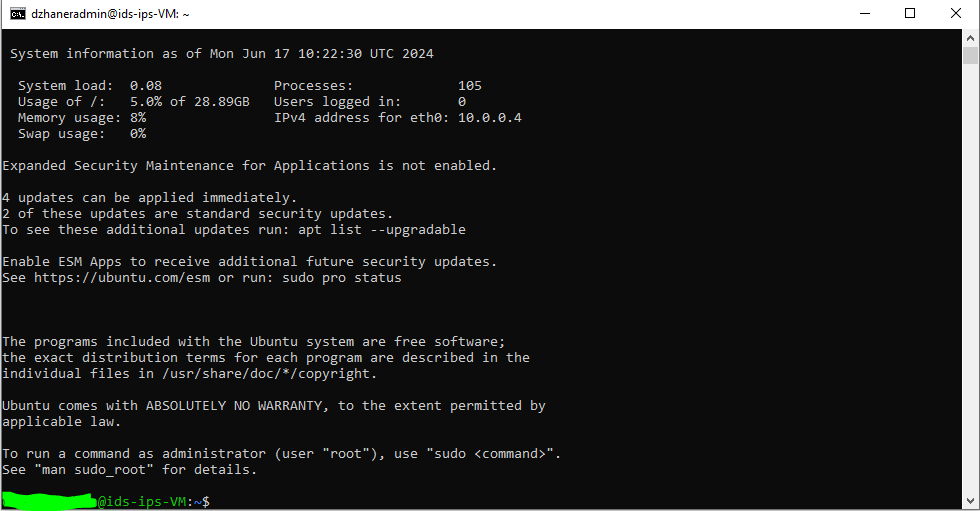
I need to install the graphical interface for Ubuntu.
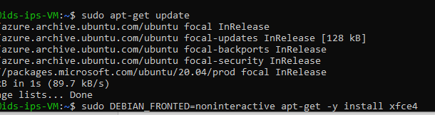
Oops! While reviewing in the image above, I noticed that I forgot to take an updated image. I missed the "N" in the command. The correct command should be: sudo DEBIAN_FRONTEND=noninteractive apt-get -y install xfce4
Maybe because I have used Linux daily on my laptop and Windows on my PC, I personally prefer GNOME over LightDM. For a lower-spec VM, LightDM might be a better option due to its lighter resource usage. However, since I used the same power VM for Windows, which is heavier than GNOME, I will go with the more comfortable option for me and choose GNOME.
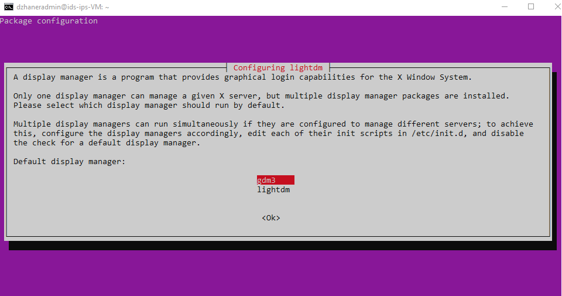
I changed my mind; I will go with XFCE. If I don't like it, I will switch to GNOME.
I am going to install xrdp in order to use Microsoft Remote Desktop Protocol (RDP) and access my machine through Remote Desktop Connection.
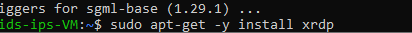
Now, I have to enable it.
Now, I need to grant certificate access to the RDP user so I can access the Ubuntu machine through Remote Desktop Connection.
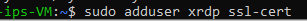
I also need to configure RDP to use XFCE as my desktop environment when I start the session.
Now I need to restart the RDP service for the changes to take effect.
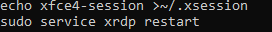
I also need to set the password for my account since RDP cannot accept SSH key authentication.
I have created a new inbound security rule and set the service to RDP.
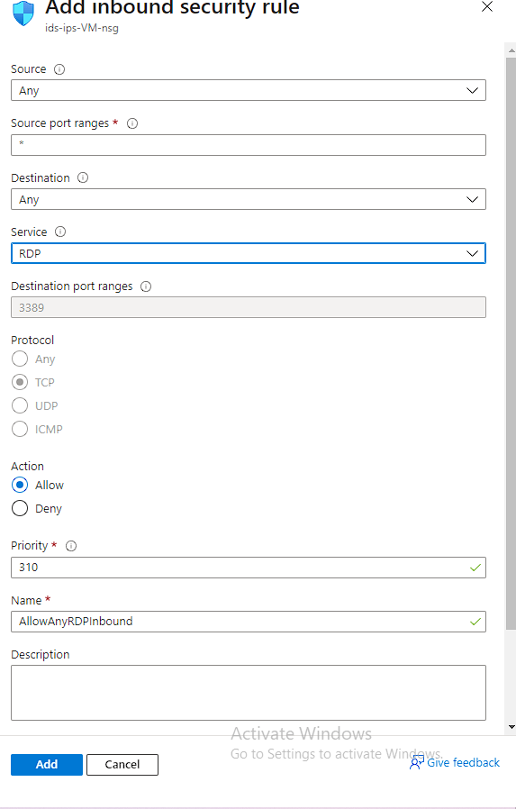
I have successfully connected to my Ubuntu machine.
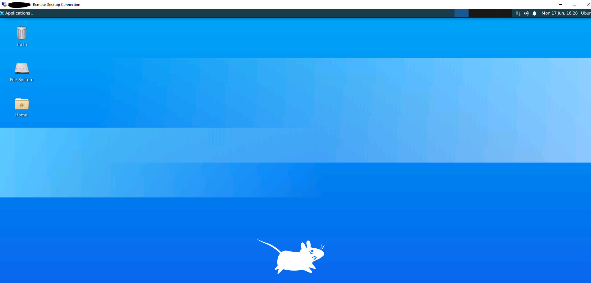
I am getting an error on my default browser.
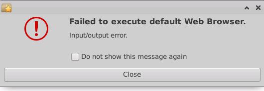
I installed Firefox and can now proceed with installing Suricata.
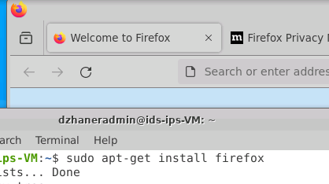
I took a look at the Suricata documentation, and it's fantastic. One great thing is that Suricata provides binary packages for the latest version from the original OISF repository, which is essential for Suricata. I just followed the steps,
as shown in the picture below.
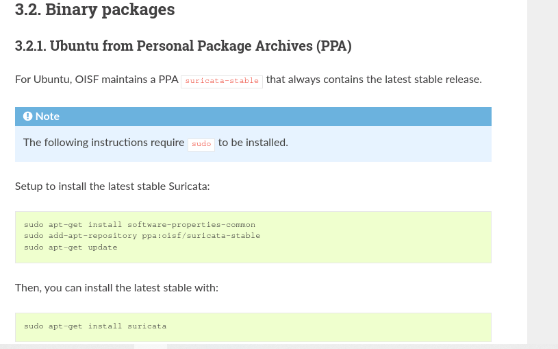
Next, I will edit my configuration file.
While looking at it, I noticed it is similar to Snort, with which I have a little experience.
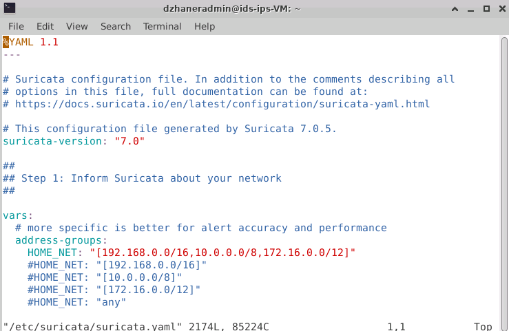
So the first thing I need to do is configure the variables. The more specific the configuration, the better the accuracy and performance. I need to specify my home network subnet address or the actual network subnet I would like to monitor.
I will obtain this information by running `ifconfig` in the terminal.
So apparently it didn't come preinstalled, but it gave me the command to install it.
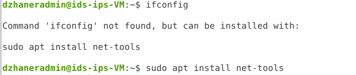
I'm actually going to use the `ip a s` command to find the entire network subnet range.
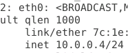
I checked the af-packet, and it seems the interface name is correct for me.
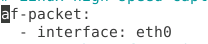
I will change the Community ID to match the records to the output of other tools.
I'm going to load the distribution rule file first. Once that's done, I'll perform a Suricata configuration test to ensure there are no issues with the options and syntax used within the Suricata configuration file.
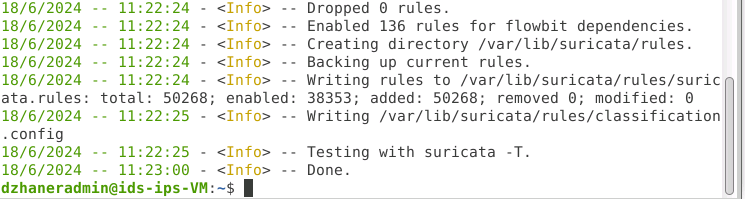
Now that it's done, I'll attempt to list the contents of the new directory.
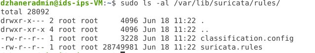
One of the really cool features that Suricata offers is the ability to specify our own sources. By default, Suricata allows you to select other sources from which you can retrieve rules or rulesets.
So, it's going to download the index of sources. These are all the sources that will provide me with various types of rulesets based on my specific requirements.
In order to add or enable malsilo/win-malware source, I am going to use the command shown in the picture below.
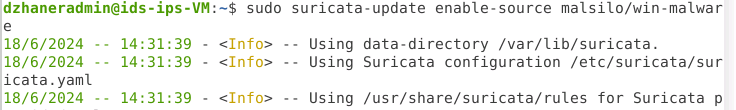
Now I can run `sudo suricata-update` to ensure I get the latest ruleset.
sudo systemctl disable suricata.service
This command will prevent Suricata from starting automatically at boot time.
To test the configuration
file, I used the second command in the image below:
sudo suricata -T -c /etc/suricata/suricata.yaml -v
This command loads the distribution rule file and performs a Suricata configuration test to ensure there are no errors
in the options and syntax used within the Suricata configuration file.
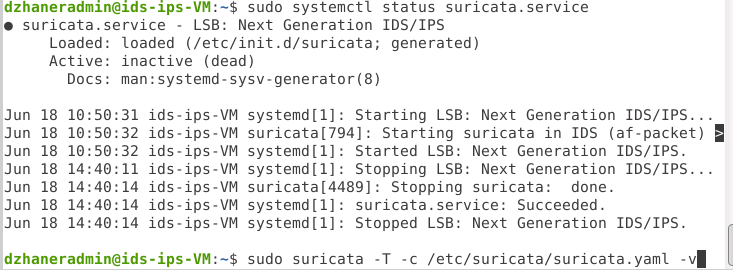
So it is running in test mode and will provide an overview of the resources and the actual fast output device. The logging configuration is in fast mode and also includes the eve-log output device, which outputs in JSON format. These are
useful because I can find all the intrusion logs in `fast.log`, and `eve.json` contains the same but a bit more detailed information in JSON format. Additionally, I can see that one rule file was processed, with 38,367 rules successfully
loaded and 0 rules failed.
Okay, so that is done. I know that Suricata will run without any issues.
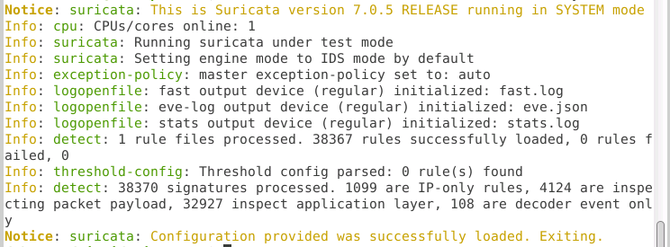
Let me start suricata.service.
And check its status.
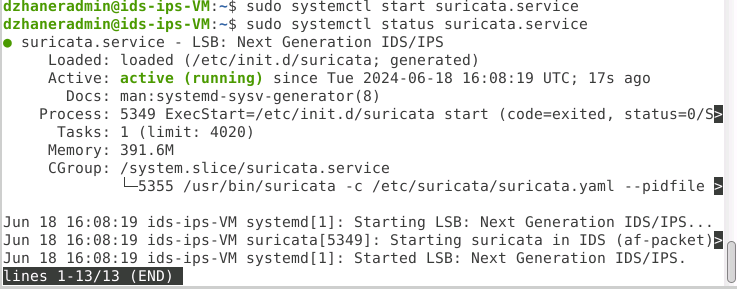
Now it is running in the background, monitoring the network traffic, and logging all files to the directory shown in the picture below.
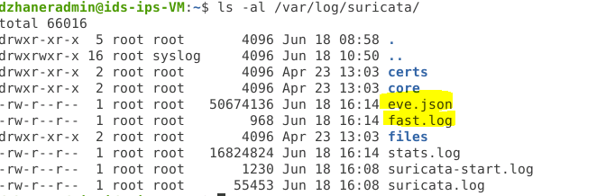
As you can see, I have the `fast.log` file containing the intrusion logs stored in standard output format, and `eve.json` which saves them in JSON format.
I will run a quick test and utilize one of the Suricata rules included within the default rules file stored in the directory you saw earlier and you will see in the picture below.
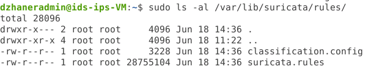
I'm going to test whether it is monitoring and tracking.
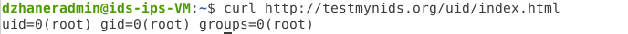
The information is considered malicious because it indicates that I have gained access to root based on the test above, or an intruder could have gained access.
Let's see if that was logged.
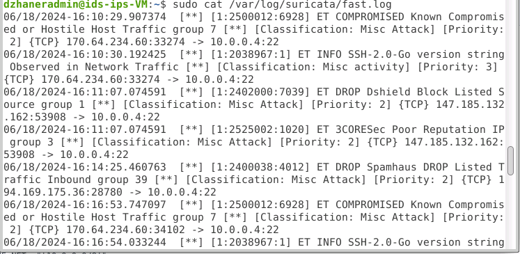
As you can see, it was logged, and suricata it is running in the background, which is good.
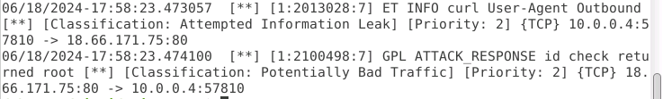
I am going to store my rules and update them in the actual suricata.yaml configuration file.
Based on what I've watched, the syntax is very similar to Snort, on which I have some knowledge from the TryHackMe SOC L1 course. Here is my custom rule that will track any alerts and any pings coming from any external network to my HOME_NET.
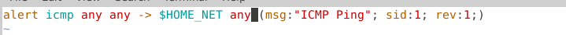
Now, I will modify my YAML configuration file to add the rule I just created.
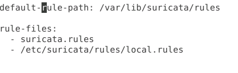
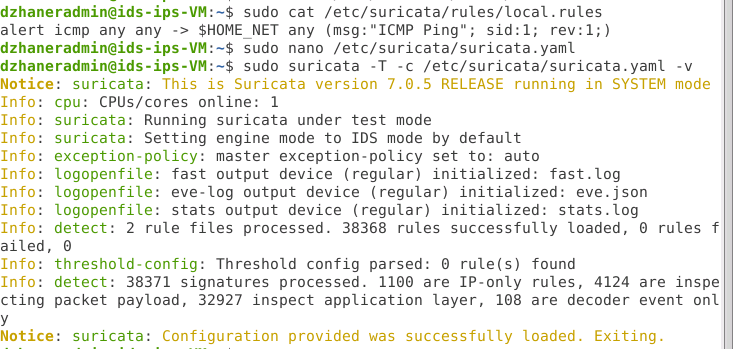
Now that this is done, I can start the suricata.service again.
At first, my pings were timing out, but for this project, I will make the machine easier to find on the internet. To see the icmp ping detection rule I just wrote, I will allow any ICMP traffic on any port.
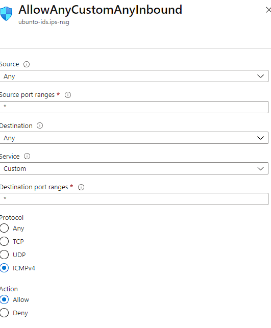
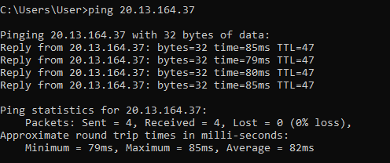
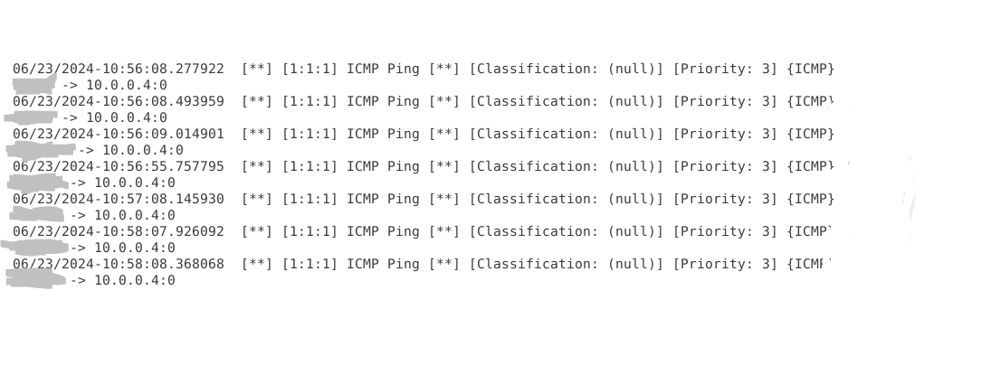
I would like to look into `eve.json`. I think I will use `jq` because the data is currently not readable in its JSON format. I downloaded the `jq` package using `sudo apt-get install jq`. `eve.json` gives quite a bit more information compared
to `fast.log` now that I can see them side by side.
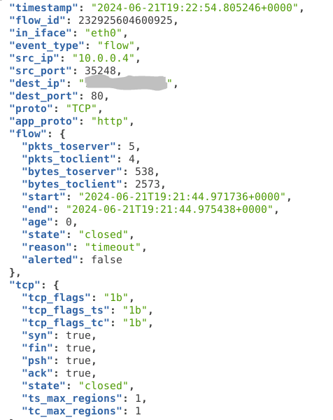
Okey, I have been able to look at the logs and the log format. Now, I want to configure Suricata with Wazuh.
I have created a new Ubuntu VM on which I will configure the Wazuh server. Ideally, setting up Wazuh on a server with the Elastic Stack would be better, especially for a company. However, for simplicity and due to limited resources, I
will use this method.
Maybe I will do a dedicated project to set up Wazuh properly in the future.
Wazuh has finished installing, and I have received my login details.
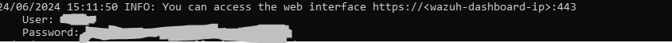
I installed Firefox on the new machine, checked my IP address, and connected to Wazuh.
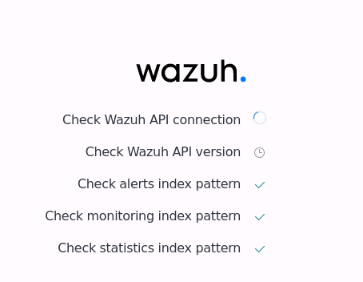
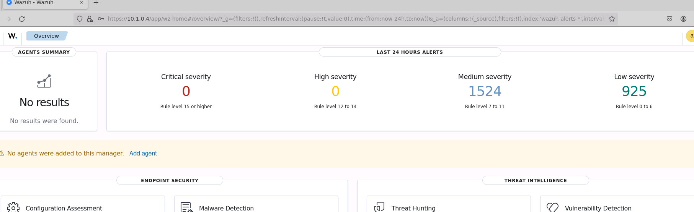
I will add my Ubuntu VM with Suricata as an agent.
I followed the instructions from the image.
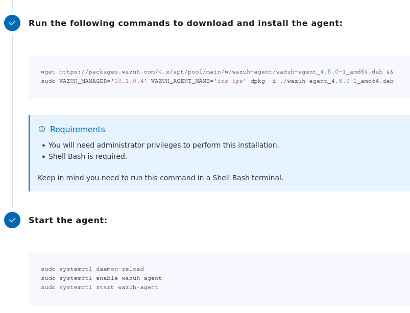
Now, let me check the status.
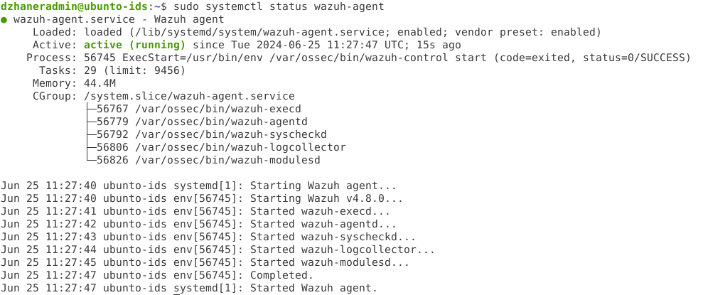
It is running. I will check on the server side as well.
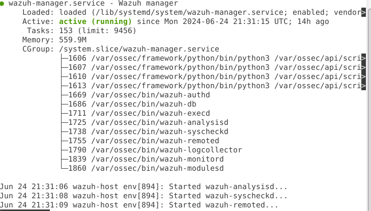
Everything looks good.
You may notice that the IPs in the images below are different. I accidentally chose a different resource group, so the VMs ended up in different virtual networks. However, I fixed this issue, and now the agent is connected.
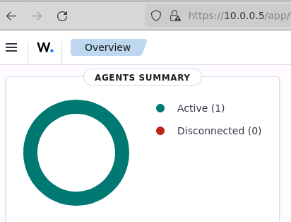
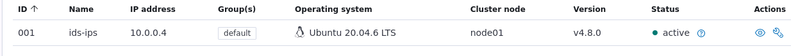
I will go to "Threat Hunting" and then select "Events" at the top to see the actual events themselves.
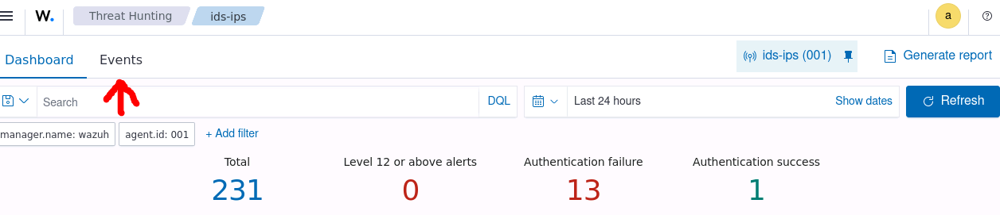
I have added eve.json to /var/ossec/etc/ossec.conf.
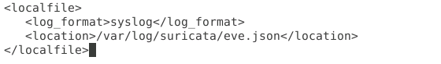
Now I can monitor my Suricata IDS/IPS through Wazuh.
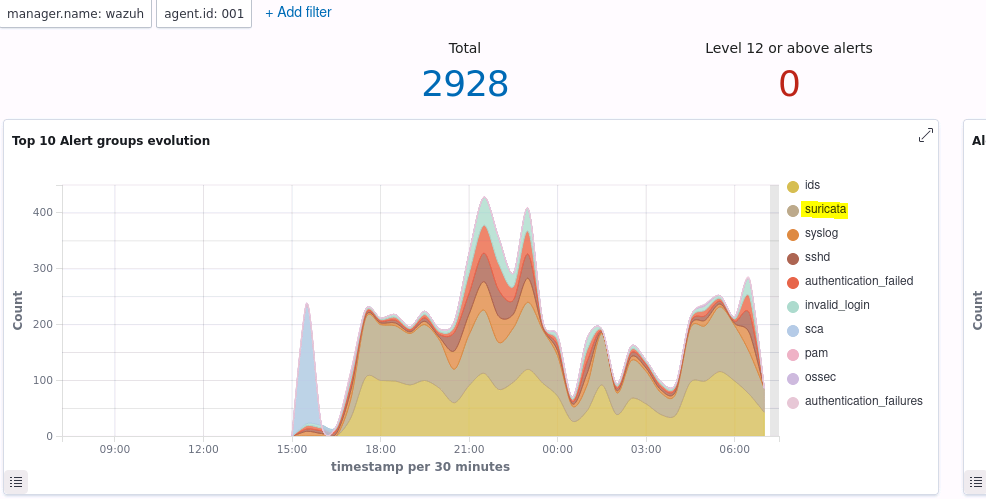
Now I can apply filters to see my Suricata logs.
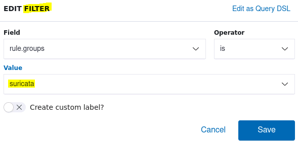
Now, under Events, I can see the Suricata logs.
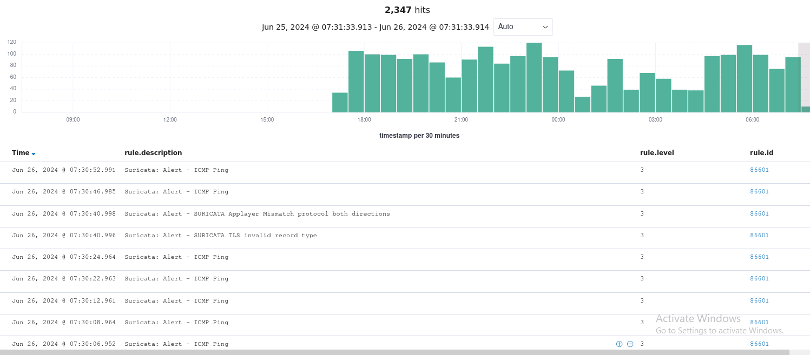
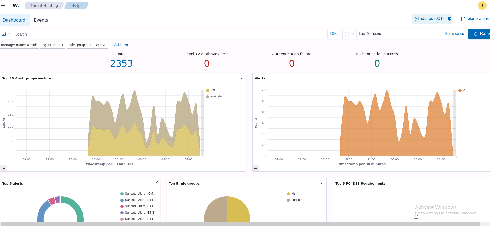
Let me test it.
The good thing about setting it up with eve.json is that I can see table information and detailed information in JSON, which is made readable.
And this will conclude my project. Thank you for reading! If you have any questions, feel free to message me on LinkedIn.